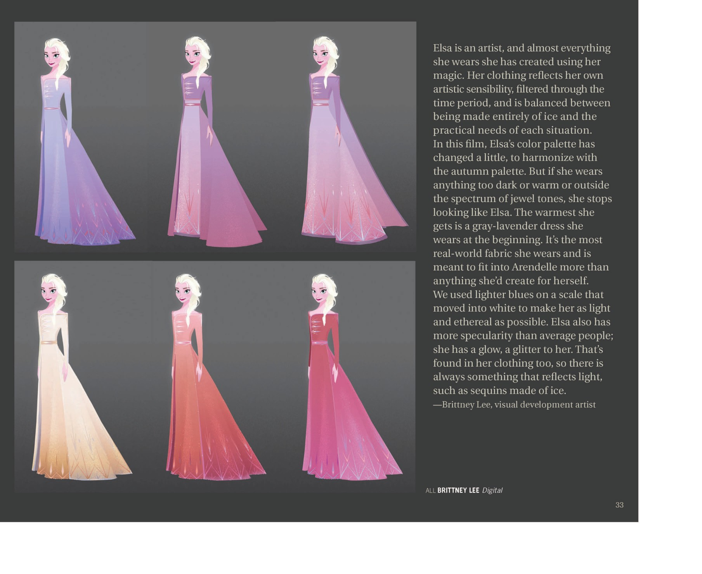

角色设计演变 · 从反派到姐姐
📖 这一页讲什么
艾莎的视觉设计，是《冰雪奇缘》美术团队最骄傲的成就之一。这一页梳理她从「雪后反派」到「安娜的姐姐」的设定演变，以及美术总监 Michael Giaimo 如何用挪威采风、rosemaling 民间艺术与冰的棱镜效应，确立了她的视觉性格。


👿 从反派到姐姐：剧本的突破
设定集明确记载：早期故事难以推进，直到编剧决定将「雪后」设定为安娜的姐姐——「Chris then brought together … make their heroine Anna, sisters with the Snow Queen Elsa」。这一个决定，让艾莎从传统的反派，变成了一个「被恐惧困住的女孩」，也奠定了全片的姐妹内核。
🎨 美术方向：挪威、rosemaling 与 bunads
Giaimo 带队赴挪威采风，从木板教堂尖塔与中世纪堡垒获得城堡灵感，并把 rosemaling（玫瑰彩绘）民间艺术融入城堡内饰与服装；姐妹的礼服也参考了色彩浓烈、织物质厚的斯堪的纳维亚传统服饰 bunads。
🌈 色彩方案：冰的棱镜效应
设定集原话：「Mike has taken inspiration from the prism effect of ice to bring into this snowy world an incredibly rich color palette.」白色被当作「可以作画的原色画布」——于是艾莎的冰雪世界并非单调的蓝白，而充盈着日出桃色、日落深粉蓝、月光靛紫的丰富层次。
❄️ 冰蕾丝披风与六边冰宫
设定集回忆：早期 Mike 给「雪后」设计了一袭惊艳的冰制蕾丝披风，「That cape set the bar very high」；后来团队从雪花六边结构获得灵感，让艾莎在大自然里「build her own ice palace throne room」。这两个设计，共同定义了艾莎「美丽却现代」的视觉基调。
😶 表情：用微表情讲心理
动画师刻意通过细微的肢体与表情变化传达艾莎的心理：紧绷的下颌、躲闪的眼神、松开手套时的迟疑——这些「不说出口」的表演，比台词更准地写出了她的恐惧与克制。
📖 设定集：服装是魔法的延伸
视觉开发艺术家 Brittney Lee 在《The Art of Frozen II》中揭示了艾莎服装设计的核心理念——她的衣服不是「穿上去的」，而是「用魔法创造出来的」：
"Elsa is an artist, and almost everything she wears she has created using her magic. Her clothing reflects her own artistic sensibility, filtered through the time period, and is balanced between being made entirely of ice and the practical needs of each situation. We used lighter blues on a scale that moved into white to make her as light and ethereal as possible. Elsa also has more specularity than average people; she has a glow, a glitter to her. That's found in her clothing too, so there is always something that reflects light, such as sequins made of ice."
—— Brittney Lee，视觉开发艺术家（visual development artist） · 《The Art of Frozen II》p.33


这段话解释了为什么艾莎的服装始终有一种「非人间」的质感：它们是冰做的亮片（sequins made of ice），有比常人更强的光泽度（specularity），用浅蓝到白色的渐变让她「尽可能轻盈空灵」。唯一的例外是 F2 开场那件灰紫长裙——Brittney Lee 明确说那是「最现实的布料」，目的是让她「融入阿伦黛尔」，而非为自己而创造。这本身就是一条视觉叙事线：从「穿给别人看」到「穿成自己」。